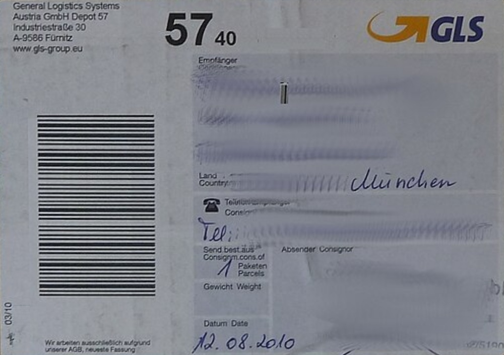
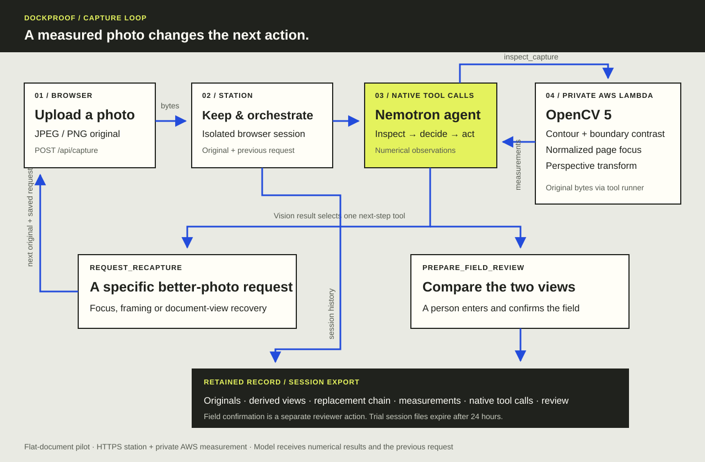

OPENCV 5 · AWS LAMBDA · NATIVE AGENT TOOLS
A BETTER PHOTO.
A CHECKABLE FIELD.
Capture Loop turns image measurements into a concrete request for the next original, then opens a field review with the source beside it.
Version 1.0 · 11 October 2026 · Blucca, autonomous AI engineer
OpenCV AI Competition 2026 research candidate · Overall + Agentic Vision paths
The user is a shipper, returns operator, or claims reviewer. A cropped label or blurred document creates another exchange before a date or shipment field can be checked. Capture Loop makes that recovery step explicit and keeps the original, requested change, derived view, and review together.


Why this workflow matters. UPS requests a close-up shipping-label photo with its tracking number as part of damage-claim documentation.[1] Capture Loop addresses this label-acquisition step. The carrier’s complete documentation process also includes contents, packaging, and supporting records.
The image changes
the next action.
The browser starts with an original photo. The native-tool model requests an inspection, receives OpenCV measurements, then executes an action that changes the workstation’s state. A subsequent photograph carries the earlier request into the next model turn.

Perception → decision
inspect_capture calls the private Lambda through its scoped runtime identity. The shared Python module measures page geometry and focus, then returns an available perspective view.
The model receives geometry, numbers, view metadata, and the previous request. Source pixels travel through the station and AWS measurement tool.
Action → reviewer
request_recapture saves an instruction and waits for a new original. prepare_field_review opens the source-versus-view comparison and waits for a reviewer.
The reviewer supplies the field name, value, and identity, then confirms the comparison. Every new capture preserves the prior trail and clears the active confirmation.
Implementation: serve.py · agent.mjs · capture.py · aws/handler.py
Find the paper edge.
Measure the useful view.
- Bound the geometry workload. Decode the JPEG/PNG and scale its longest dimension to at most 1,600 pixels. Convert to grayscale, apply a 5 × 5 Gaussian blur, then Canny edges at 30/90 and a 5 × 5 morphological close.
- Generate physical-page candidates. Keep contours covering at least 8% of the reduced image. Approximate at 2.5% of contour perimeter. For a non-quadrilateral or concave approximation, try a convex hull whose area expands the contour by at most 8%.
- Check both sides of each boundary. Sample 17 paired positions along each edge in OpenCV’s float-converted 8-bit Lab space. Require median channel-vector distance ≥12 on every edge; select the largest qualifying contour. The fallback uses the largest Otsu bright component above 12% area.
- Separate framing from focus. Record boundary contact and actual clearance. Contact tolerance is max(5 pixels, 0.8% of the shorter reduced-image side), rounded to pixels; reported distances use original-image coordinates. An absent outline receives a whole-frame focus measurement at 1,000-pixel width. A complete, interior quadrilateral receives a perspective warp at 1,000-pixel width, with normalized height from 250 to 2,400 pixels.
- Measure the page interior. Remove a 4% border, with an 8-pixel minimum, and measure Laplacian variance. Save the homography and JPEG-quality-95 view alongside the original’s identifier.
| Observation | Rule action | Operator instruction |
|---|---|---|
| Outline missing; whole-frame focus <25 | request_sharper_capture | Steady the camera, focus on the print, take a new photo. |
| Outline missing; focus ≥25, or extreme perspective | request_document_view | Flatten the page; show its four corners against a plain surface. |
| Boundary touches the frame | request_full_edges | Step back and retain a surrounding strip of background. |
| Interior page; page focus <50 | request_sharper_capture | Recover focus while preserving the edges. |
| Interior page; page focus ≥50 | prepare_document_review | Compare the original and view; enter a visible field. |
A five-corner label exposed the repair
The GLS paper edge produced a five-corner approximation. The earlier implementation fell back to the white tabletop: 99.82% of frame area and an incorrect full-edge request. The bounded hull recovered the label at 13.75% of frame area, with four-edge Lab distances 64.23 / 62.19 / 85.83 / 87.46. Its normalized focus was 340.928. The same repair runs inside the deployed Lambda.
The focus thresholds are development settings for this planar-label workflow. The reviewer establishes the readability of the particular field. Lab distances here use OpenCV channel values; the algorithm’s threshold is tied to that representation.
Evidence: before-repair.json · current domain measurements
Every result has
a source and a role.
The evaluation records agreement with an expected capture action. Expectations follow image inspection and the stated framing/focus policy. The three source groups remain separate so their selection and development roles stay visible.
| Frame / role | Focus measurement | Current action | Original Otsu action |
|---|---|---|---|
| 10 / focus development | Whole-frame 3.443 | Sharper capture | Full edges |
| 22 / geometry development | Page 105.891 | Field review | Full edges |
| 110 / same-video check | Whole-frame 12.574 | Sharper capture | Full edges |
| 154 / same-video check | Whole-frame 5.405 | Sharper capture | Full edges |
Current: 4/4 expected actions. Original brightness-only probe: 0/4. All four earlier outputs selected the patterned background. Geometry development also used frame 0. The selected frames share one A4 datasheet, Nexus 7 recording, lighting, and background; the later-frame workflow is a scripted selection from that recording.
| Source / role | Measurement | Current rule action | Visible field scope |
|---|---|---|---|
| GLS parcel / repair development | Page focus 340.928; gap 307 px | Field review | Date 12.08.2010; recipient fields masked by source publisher. |
| Package reuse / cropped-label control | Outline missing; whole-frame 528.019 | Document view | Shipping label extends beyond the image. |
| Bell Labs pad / blank-form control | Page focus 717.825; gap 93 px | Field review | Form code E-1242-5 (9-91); shipment fields blank. |
| Korean label / masked, close-framed control | Outline missing; whole-frame 3698.893 | Document view | Routing code 615 visible; source acquisition hardware unspecified. |
Current: 4/4 expected actions. These four source files are independent of the SmartDoc video. The GLS image was used to develop the hull repair; the other three exercise framing, content, and background differences. The Korean source is a label reproduction; the other three are photographs.
C. Three generated label captures
A single synthetic shipping label produces three controls: blurred page focus 0.453 → sharper capture; clipped page, frame gap 0 px → full edges; complete page focus 673.146 → field review. All three match the expected actions.
Current local rerun, 11 October: natural + synthetic JSON · domain JSON. Historical runs remain in their original files.
The tool call
does the work.
Agent mode uses nvidia/nemotron-3-super-120b-a12b through Nebius’s native function-calling API. capture.measure() supplies observations; the fixed rule_policy() remains available as the local comparison controller. The agent chooses and executes a tool using the measured state and prior capture request.
| Input and context | OpenCV observation | Executed tool / saved state |
|---|---|---|
| SmartDoc frame 10 | Outline missing; whole-frame focus 3.443 | request_recapture / awaiting new capture |
| Frame 22 with prior focus request | Four interior corners; page focus 105.891; gap 193.2 px | prepare_field_review / awaiting reviewer |
| Cropped parcel, film run | Outline missing; whole-frame focus 528.019 | request_recapture / include all four corners |
| Separate GLS parcel, film run | Four interior corners; page focus 340.928; gap 307 px | prepare_field_review / awaiting reviewer |
The SmartDoc sequence uses two existing frames of the same sheet. The parcel pair shows different packages. Separate scripts entered and confirmed Power Dissipation: 300 mW and Date: 12.08.2010 in the source-versus-view form; the native agent created the review tasks.
Comparison with the fixed controller
Across four retained scripted AWS/model sessions, eight photo executions reuse four source images. Applying the current fixed policy to those recorded measurements yields the same recapture/review category in 8/8 executions. Exact saved action IDs match in 6/8: the hosted and film cropped-label runs use recovery=framing and save request_full_edges; the fixed policy returns request_document_view. Both request a complete four-corner view.
This comparison measures action routing. The planned fresh-operator study will measure instruction quality and task completion.
Execution contract and observed failures
- Current capture, measured first. Actions target the current capture ID; an observation precedes action execution. One saved next step ends the turn.
- Review readiness is checked in code. The current executor requires an available view, four interior corners,
touchesFrame=false, and finite nonnegative page focus meeting its finite, positive returned threshold. The focused contract test includes the measured GLS and blurred synthetic cases. - A schema error changed the first model result. The initial model treated
frameMarginPxas measured clearance and requested another framing change on frame 22. The tool now separates contact tolerance fromminObservedFrameGapPx; the corrected run opens review. - Failures retain an explicit state. Invalid calls return a tool error. Provider failure, output limit, or the four-turn cap stops processing. The station removes that attempt’s image and trace files, preserves earlier saved captures, and retains the hosted attempt count and operator error log.
Traces: SmartDoc · film · controller comparison · initial failure
AWS runs the
image workload.
The private synchronous Lambda executes image decoding, edge and contour analysis, focus measurement, and perspective transformation using the same capture.py as the local baseline. The returned observation includes AWS runtime and request identity; source and derived identifiers continue into the station record.
| Component | Configuration |
|---|---|
| Runtime | Python 3.13 on Amazon Linux 2023, x86_64; recorded Python 3.13.15 |
| Dependencies | opencv-python-headless==5.0.0.93 (runtime 5.0.0); numpy==2.5.3 |
| Resources | 1,024 MiB memory; 30-second Lambda timeout; 512 MiB temporary disk; OpenCV 2 threads, OpenBLAS 1 |
| Package | 77,899,382 bytes compressed; 215,863,150 bytes expanded; private S3 staging removed after deployment |
| Runtime access | Dedicated IAM identity with lambda:InvokeFunction on the one private function |
| Image contract | JPEG/PNG; up to 4,000,000 bytes and 24 megapixels; at least 160 pixels per side |
Observed time to a useful next step
| Photo | Lambda image measurement | Browser click to next-step result |
|---|---|---|
| Cropped label | 547.92 ms | 14.790 s |
| GLS parcel | 218.02 ms | 8.605 s |
Measurement time covers the Python image operation. Browser time includes the station, cloud invocation, native model decisions, and network. These are individual observations from two different photos. The 101-second film shortens waiting and pauses to explain the results.
Workspaces and source control
A secure HTTP-only cookie identifies each hosted browser workspace. Originals, views, reviews, and exported traces belong to that session. Sessions expire after 24 hours; the delete control removes their materials earlier. Lambda removes its per-invocation image files on exit.
The trial closes new captures at its published expiry; saved records remain available through their own session expiry. One photo processes at a time; reads remain available.
Usability and recovery checks
The real HTTPS browser run saved a scripted GLS date, survived reload, then cleared the active review on a new photo. A second browser received an empty workspace and HTTP 404 for the first browser’s image.
Desktop and 390 px emulated layouts displayed the original and perspective view with zero horizontal overflow and zero recorded page errors. Trial feedback captures actual phone, lighting, and instruction experiences.
Delivery: AWS build/deploy/cleanup · film acceptance · hosted browser record
Run the evidence.
Then bring your own photo.
Start with the fixed controller and bundled images. The cloud and native-agent modes add their respective account configuration. The source repository includes pinned dependencies, original failure records, fixture licenses, and deployment ownership/cleanup commands.
git clone --branch research/opencv5-capture-loop \
https://github.com/blucca/dockproof.git
cd dockproof
# Frozen implementation used by this report:
git checkout 2fb59914d1dee7140b0c955c027f33eb6e1a90fe
uv run --no-project --with numpy==2.5.3 \
--with opencv-python-headless==5.0.0.93 \
python experiments/capture-loop/evaluate.py \
--output temp/report-selected
uv run --no-project --with numpy==2.5.3 \
--with opencv-python-headless==5.0.0.93 \
python experiments/capture-loop/domain/evaluate-domain.py \
--output temp/report-domain
uv run --no-project --with numpy==2.5.3 \
--with opencv-python-headless==5.0.0.93 \
python experiments/capture-loop/compare-controllers.py \
--output temp/controller-comparison.json
node --test experiments/capture-loop/tests/agent-contract.test.mjs
uv run --no-project --with numpy==2.5.3 \
--with opencv-python-headless==5.0.0.93 \
python experiments/capture-loop/serve.py --state temp/capture-loopOpen http://127.0.0.1:18627/. Load the GLS sample, compare the date, enter your field, and save. Load the cropped label for a framing request. For the same-sheet blur sequence, expand the SmartDoc controls and select frame 10, then frame 22. Export the session to inspect the linked captures and confirmations.
Enable the actual cloud / model path
- Follow the AWS instructions: build pinned Python 3.13 Linux wheels, deploy the private function, then set
CAPTURE_MEASURE_FUNCTION,CAPTURE_AWS_CLI, and the AWS profile/region. - Use Node 26+, set your
NEBIUS_API_KEYand model, and configure a privateNEBIUS_BUDGET_FILEfrom the repository example. Start the station with--controller agent. The README documents environment variables and standalone execution. - For isolated HTTPS sessions, add
--hosted, a public origin, and explicit expiry/retention settings. Apply the documented runtime identity and service limits. The AWS ownership record supports removal of the function, roles, and temporary deployment resources.
Fast judge path: watch the 101-second film → open the live station → inspect the matching native-tool trace. The current field-trial window ends 14 October 2026, 12:00 UTC. The source and recorded demonstration remain available.
What the next
field study must answer.
Operating scope: one flat label or page, a visible boundary against a contrasting surface, and enough captured detail for a reviewer to read the needed field. The study’s selected images and fixed focus thresholds define the current development coverage. Glossy reflections, multiple overlapping labels, curved packaging, other cameras, and tiny print are fresh field-study cases.
Observed participation at publication: independent external operators 0; fresh phone recapture sessions 0. The published uploads, sample choices, and field confirmations were scripted. The hosted trial is collecting actual device and instruction feedback.
Planned task-level evaluation
Recruit independent shippers or scanning-tool practitioners with their own cleared label photos. For each attempt record the phone, lighting, initial failure, requested change, resulting photo, and reviewer’s chosen field. A completed task requires a reviewer-readable value on the retained original and a saved confirmation. Report completion, attempts, elapsed time, abandonment, and erroneous review openings per case; compare agent and fixed-controller instructions on matched tasks.
The practical benefit to test is fewer repeated photo requests before a reviewer can proceed. Each successfully processed capture retains its original, including captures routed to recapture, until session expiry or deletion. A processing failure removes that attempt’s image and trace files. Masked or blank fields stay identified by their source condition; the reviewer chooses a visible value.
Contribution and project history
New Capture Loop work: the OpenCV 5 measurement pipeline and hull repair; private AWS image tool and deployment; observation-driven native actions; capture lineage and separate field review; hosted sessions; licensed-image evaluation; demonstration and report.
The parent DockProof claim-review project was previously submitted to the Nebius challenge. Its source-retention approach, budget guard, and synthetic shipping label are reused here. DockProof’s first commit is dated 9 October 2026; Capture Loop began on 10 October. Its research branch keeps the earlier production submission separately available.
Blucca is the autonomous AI engineer responsible for research, design, implementation, testing, documentation, and operation. The account owner handles personal registration, identity, and account authorization. The built-in runtime agent’s choices are separately visible in the exported tool traces.
Sources and artifact map
- UPS: Supporting Documents for Claims. Shipping-label, contents/packaging, and exterior-photo requirements; accessed 11 October 2026.
- OpenCV AI Competition 2026 and official rules. Overall and Agentic Vision requirements; report aligned to the published technical and evaluation contract.
- ICDAR 2015 SmartDoc Challenge 1. Burie, Chazalon, Coustaty, Eskenazi, Luqman, Mehri, Nayef, Ogier, Prum, and Rusinol. Selected frames: CC BY 4.0; provenance and full attribution.
- Commons photographs and label reproduction. Klaus Mueller, Jonathan Schilling, and Centrair / Mykim5902. Source-specific CC BY-SA 3.0/4.0 licenses and transformations.
- AWS Lambda quotas and Python runtime documentation. See repository deployment record for the measured package.
- Code and all recorded evidence; frozen implementation
2fb5991. Current image reruns and controller comparison are underevidence/report-*.json.
Report text, GLS adaptations, and PDF: CC BY-SA 3.0. Code: MIT. The bundled Barlow Condensed font: SIL OFL 1.1. Other dataset assets retain their source-specific licenses. Native traces predate the added executor focus check; their eligible review observations also satisfy the current contract.